OpenShift
Diese Anleitung soll dabei helfen die gängigsten Arbeitsschritte eines Entwicklers für die Implementation seines Microservices in einen Docker Container innerhalb des OpenShift Clusters zu erläutern.
Anmelden am OpenShift Cluster
- Die Anmeldung erfolgt entweder über einen Webbrowser oder mit dem
oc loginKommando (https://github.com/openshift/origin/releases/latest). - Die nötige URL ist entweder https://dalek.gfi.ihk.de:8443 für die Testumgebung oder https://iason.gfi.ihk.de:8443
- Jedes Projekt hat einen Projektbenutzer unter dem vom Projektverantwortlichen das eigentliche Projekt angelegt und Zugriffsrechte für personalisierte Benutzeraccounts verwaltet werden.
- Jeder Benutzer sollte über einen persönlichen Account (z.B. mleimenmeier für Michael Leimenmeier) verfügen, mit dem er sich wie in Punkt 5 dargestellt anmelden kann.
-
oc login [-u username] [-p password] https://iason.gfi.ihk.de:8443
07:57:10 leimm@189tuxlem001:workbench> oc login -u spielwiese https://iason.gfi.ihk.de:8443
Authentication required for https://iason.gfi.ihk.de:8443 (openshift)
Username: spielwiese
Password:
Login successful.
You don't have any projects. You can try to create a new project, by running
$ oc new-project <projectname>
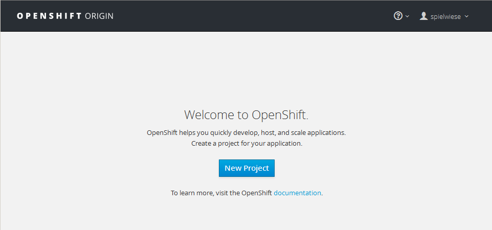
Projekt erstellen
Ist man noch keinem Projekt zugeteilt sollte man sich zuerst ein Projekt erstellen, da dies gleichzeitig auch den aktuellen Arbeitsbereich darstellt:
-
oc new-project <Projektkennung> [--display-name="Bezeichnung"] [–description="Ausführliche Beschreibung"]
09:23:57 leimm@189tuxlem001:~> oc new-project mongodbdemo --display-name="MongoDB Demo App" --description="Eine kleines Songarchiv um die Funktion einer Mongo Datenbank mit persistentem Storage innerhalb des OpenShift Clusters zu demonstrieren."
Now using project "mongodbdemo" on server "https://iason.gfi.ihk.de:8443".
You can add applications to this project with the 'new-app' command. For example, try:
$ oc new-app centos/ruby-22-centos7~https://github.com/openshift/ruby-hello-world.git
to build a new hello-world application in Ruby.
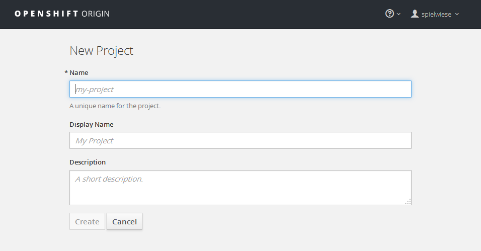
Applikation erstellen
Innerhalb eines Projektes kann es mehre Applikationen geben. Eine Applikation besteht wiederum mindestens aus einer DeploymentConfig und einem ImageStream für das fertige Docker Image; zumeist aber auch einer BuildConfig und einem weiteren ImageStream für das Docker Image, welches als Basisimage angegeben wurde.
- Zu allererst müssen die eigenen Quellcodes bzw. bei einem Docker Build das entsprechende Dockerfile in einem vom OpenShift erreichbaren git Repository abgelegt sein.
- Ist das Repository zum klonen nicht öffentlich zugänglich muss eine Authentifizierung via ssh key eingerichtet werden (siehe HowTo: Repository Authentifizierung einrichten)
- Zur Erstellung einer Applikation gibt es im OpenShift drei verschiedene Möglichkeiten:
- Source2Image (S2I): Hierbei nutze ich ein meist von RedHat bereitgestelltes BuilderImage welches dahingehend optimiert wurde, dass man nur noch die url des Quellcode Repositories angeben muss, evtl. Modulabhängigkeiten in einer entsprechenden Datei (bei Python z.B. die requirements.txt) hinterlegt und bei Bedarf noch weitere Konfigurationsparameter angeben kann. Bei der Einrichtung der MongoDB unten handelt es sich zum Beispiel um die Anwendung des S2I Verfahrens.
- Docker Build: Bei dieser Strategie legt man ein Dockerfile mit den für den Build notwendigen Informationen, sowie gegebenenfalls nötigen weiteren Dateien (Konfigurationsdateien, Daten usw.) und evtl. vorhandenen Quellcodes in einem git repository ab und gibt dies bei der Erstellung der App mit an. Alle notwendigen Konfigurationsparameter stehen im Dockerfile oder werden als Environment Variablen entweder bei der Erstellung auf der Kommandozeile oder auch nachträglich durch hinzufügen in der DeploymentConfig gesetzt. Ein erstellen der App mit dieser Build Strategie ist ausschliesslich über die Kommandozeile möglich. Ein Beispiel findet man unten für die "songbase" Webapplikation.
- Custom Build: Benötigt man über diese beiden Verfahren hinaus noch weitere Möglichkeiten den Buildprozess zu steuern gibt es auch noch die Möglichkeit eigene Templates zu definieren oder z.B. den integrierten Jenkins CI Server zu nutzen. Eine Vorstellung all dieser Möglichkeiten würde aber den Rahmen dieses HowTos sprengen und wird daher an anderer Stelle behandelt.
Installation einer MongoDB via Template (S2I Builder Image analog)
Schauen welche Ressourcen via "Add to Project..." erhältlich sind
10:08:20 leimm@189tuxlem001:~> oc new-app --search mongodb
Templates (oc new-app --template=<template>)
-----
mongodb-ephemeral
Project: openshift
MongoDB database service, without persistent storage. WARNING: Any data stored will be lost upon pod destruction. Only use this template for testing
mongodb-persistent
Project: openshift
MongoDB database service, with persistent storage. Scaling to more than one replica is not supported
nodejs-mongodb-example
Project: openshift
An example Node.js application with a MongoDB database
Image streams (oc new-app --image-stream=<image-stream> [--code=<source>])
-----
mongodb
Project: openshift
Tags: 2.4, 2.6, latest
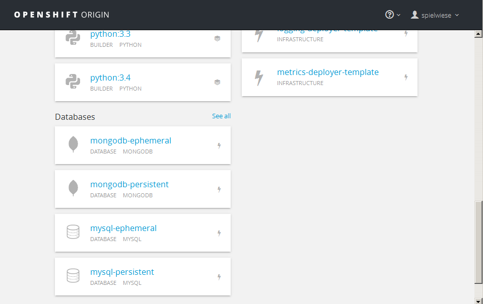
Mongo Datenbank mit 512MB grossem persistentem Storage hinzufügen
10:42:03 leimm@189tuxlem001:~> oc new-app --param MONGODB_DATABASE=songdb,MONGODB_USER=river,MONGODB_PASSWORD=song,MONGODB_ADMIN_PASSWORD=tardis --name=songdb --template=mongodb-persistent
--> Deploying template "mongodb-persistent" in project "openshift" for "mongodb-persistent"
With parameters:
DATABASE_SERVICE_NAME=mongodb
MONGODB_USER=river
MONGODB_PASSWORD=song
MONGODB_DATABASE=songdb
MONGODB_ADMIN_PASSWORD=tardis
VOLUME_CAPACITY=512Mi
--> Creating resources with label app=songdb ...
service "mongodb" created
persistentvolumeclaim "mongodb" created
deploymentconfig "mongodb" created
--> Success
Run 'oc status' to view your app.
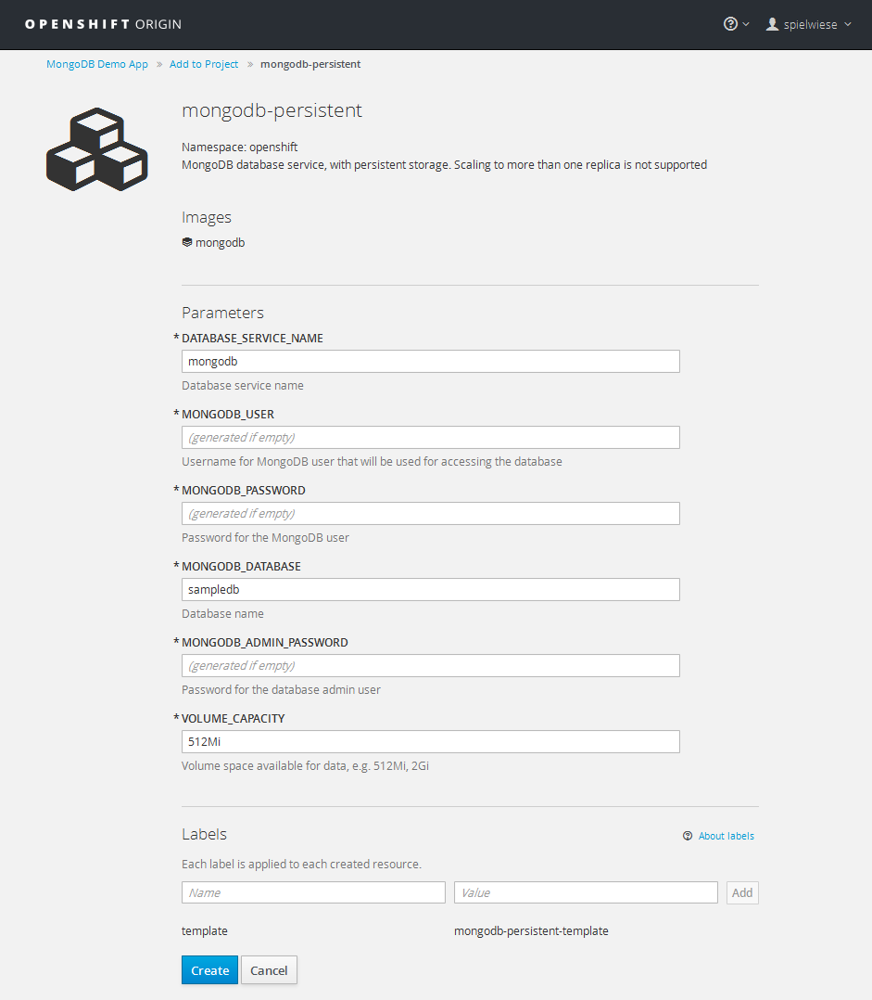
Übersicht über das aktuelle Projekt anzeigen
10:42:18 leimm@189tuxlem001:~> oc status -v
In project MongoDB Demo App (mongodbdemo) on server https://iason.gfi.ihk.de:8443
svc/mongodb - 172.30.8.138:27017
dc/mongodb deploys openshift/mongodb:latest
deployment #1 running for about a minute - 1 pod
Warnings:
* dc/mongodb has no readiness probe to verify pods are ready to accept traffic or ensure deployment is successful.
try: oc set probe dc/mongodb --readiness ...
View details with 'oc describe <resource>/<name>' or list everything with 'oc get all'.
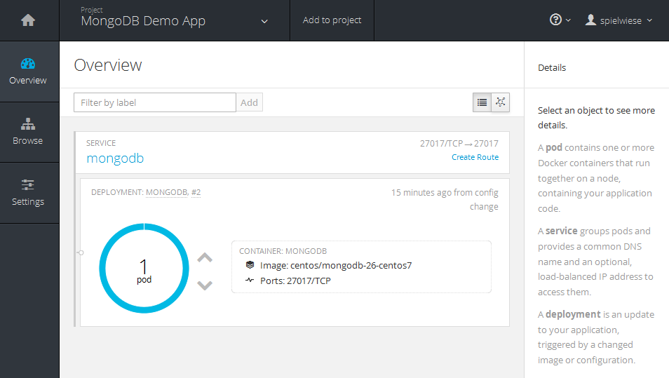
Wie im Warning oben gewünscht eine "Readiness"-Probe für den Dienst hinzufügen
10:17:44 leimm@189tuxlem001:~> oc set probe dc/mongodb --readiness --open-tcp=27017
deploymentconfig "mongodb" updated
Installation einer Python Applikation via S2I Builder Image
Schauen welche Ressourcen via "Add to Project..." erhältlich sind
10:08:20 leimm@189tuxlem001:~> oc new-app --search python
Image streams (oc new-app --image-stream=
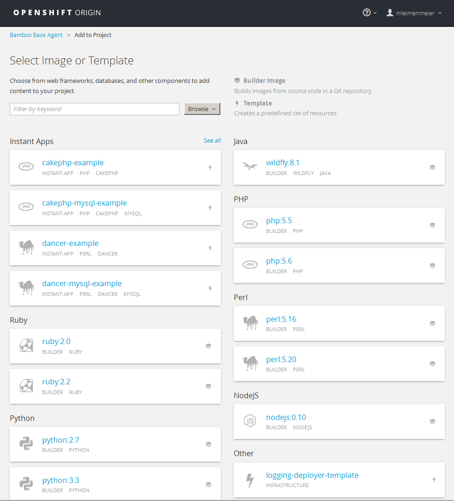
Python 2.7 Applikation mit Hilfe der <image>:<version>~<gitrepo> Syntax erzeugen
14:48:17 leimm@189tuxlem001:~> oc new-app --name=songbase openshift/python:2.7~ssh://git@bitbucket.backend.gfi.ihk.de:7999/snafu/mongodemo.git
--> Found image 1ad8f28 (4 months old) in image stream "python" in project "openshift" under tag "2.7" for "openshift/python:2.7"
Python 2.7
----------
Platform for building and running Python 2.7 applications
Tags: builder, python, python27, rh-python27
* A source build using source code from ssh://git@bitbucket.backend.gfi.ihk.de:7999/snafu/mongodemo.git will be created
* The resulting image will be pushed to image stream "songbase:latest"
* This image will be deployed in deployment config "songbase"
* Port 8080/tcp will be load balanced by service "songbase"
* Other containers can access this service through the hostname "songbase"
--> Creating resources with label app=songbase ...
imagestream "songbase" created
buildconfig "songbase" created
deploymentconfig "songbase" created
service "songbase" created
--> Success
Build scheduled for "songbase", use 'oc logs' to track its progress.
Run 'oc status' to view your app.
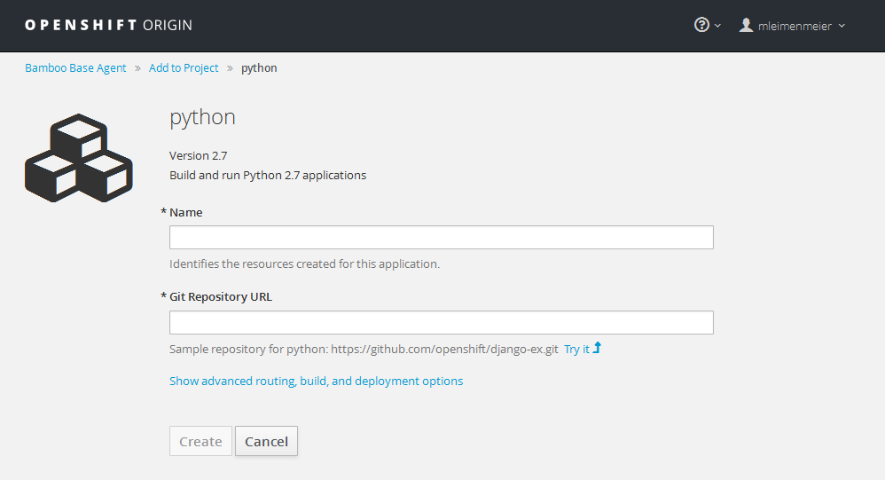
Build Vorgang starten und beobachten
entweder mit
15:03:35 leimm@189tuxlem001:~> oc start-build bc/songbase
songbase-4
15:03:58 leimm@189tuxlem001:~> oc logs bc/songbase
I0601 13:43:13.562766 1 builder.go:57] Master version "v1.1.3", Builder versions "v1.1.3"
I0601 13:43:13.578552 1 builder.go:145] Running build with cgroup limits: api.CGroupLimits{MemoryLimitBytes:9223372036854775807, CPUShares:2, CPUPeriod:100000, CPUQuota:-1, MemorySwap:9223372036854775807}
I0601 13:43:13.581236 1 sti.go:190] The value of ALLOWED_UIDS is [1-]
I0601 13:43:14.009030 1 docker.go:290] Using locally available image "docker.io/centos/python-27-centos7@sha256:1ad8f282fd20d83c393004f76af39d2b6e8daff9034810e78e4c48219f10085a"
I0601 13:43:14.062637 1 sti.go:212] Creating a new S2I builder with build config: "Builder Name:\t\tPython 2.7\nBuilder Image:\t\tdocker.io/centos/python-27-centos7@sha256:1ad8f282fd20d83c393004f76af39d2b6e8daff9034810e78e4c48219f10085a\nBuilder Image Version:\t738d0f859cfd2a80bb11e48eeefb3a6eb1b3c4f3\nBuilder Base Version:\t8d95148\nSource:\t\t\tfile:///tmp/s2i-build284983461/upload/src\nOutput Image Tag:\tpodenv/songbase-4:dddeb478\nEnvironment:\t\tOPENSHIFT_BUILD_NAME=songbase-4,OPENSHIFT_BUILD_NAMESPACE=podenv,OPENSHIFT_BUILD_SOURCE=ssh://git@bitbucket.backend.gfi.ihk.de:7999/snafu/mongodemo.git\nIncremental Build:\tdisabled\nRemove Old Build:\tdisabled\nBuilder Pull Policy:\tif-not-present\nQuiet:\t\t\tdisabled\nLayered Build:\t\tdisabled\nWorkdir:\t\t/tmp/s2i-build284983461\nDocker NetworkMode:\tcontainer:5143741f587c6a0c514df19418240accb41dedbc8e1c063a6e62d03487268081\nDocker Endpoint:\tunix:///var/run/docker.sock\n"
I0601 13:43:14.088658 1 docker.go:290] Using locally available image "docker.io/centos/python-27-centos7@sha256:1ad8f282fd20d83c393004f76af39d2b6e8daff9034810e78e4c48219f10085a"
I0601 13:43:14.141760 1 docker.go:290] Using locally available image "docker.io/centos/python-27-centos7@sha256:1ad8f282fd20d83c393004f76af39d2b6e8daff9034810e78e4c48219f10085a"
I0601 13:43:14.141813 1 docker.go:410] Image contains io.openshift.s2i.scripts-url set to 'image:///usr/libexec/s2i'
I0601 13:43:14.141909 1 sti.go:140] Preparing to build podenv/songbase-4:dddeb478
I0601 13:43:14.147985 1 source.go:197] Downloading "ssh://git@bitbucket.backend.gfi.ihk.de:7999/snafu/mongodemo.git" ...
I0601 13:43:14.364602 1 source.go:208] Cloning source from ssh://git@bitbucket.backend.gfi.ihk.de:7999/snafu/mongodemo.git
I0601 13:43:14.596791 1 install.go:236] Using "assemble" installed from "image:///usr/libexec/s2i/assemble"
I0601 13:43:14.596854 1 install.go:236] Using "run" installed from "image:///usr/libexec/s2i/run"
I0601 13:43:14.596875 1 install.go:236] Using "save-artifacts" installed from "image:///usr/libexec/s2i/save-artifacts"
I0601 13:43:14.596916 1 sti.go:148] Clean build will be performed
I0601 13:43:14.596922 1 sti.go:151] Performing source build from file:///tmp/s2i-build284983461/upload/src
I0601 13:43:14.596929 1 sti.go:164] Running "assemble" in "podenv/songbase-4:dddeb478"
I0601 13:43:14.596952 1 sti.go:412] Using image name docker.io/centos/python-27-centos7@sha256:1ad8f282fd20d83c393004f76af39d2b6e8daff9034810e78e4c48219f10085a
I0601 13:43:14.596962 1 sti.go:416] No .sti/environment provided (no environment file found in application sources)
I0601 13:43:14.597202 1 sti.go:517] starting the source uploading ...
I0601 13:43:14.599922 1 docker.go:410] Image contains io.openshift.s2i.scripts-url set to 'image:///usr/libexec/s2i'
I0601 13:43:14.599968 1 docker.go:465] Base directory for STI scripts is '/usr/libexec/s2i'. Untarring destination is '/tmp'.
I0601 13:43:14.600001 1 docker.go:614] Creating container using config: &{Hostname: Domainname: User: Memory:0 MemorySwap:0 MemoryReservation:0 KernelMemory:0 CPUShares:0 CPUSet: AttachStdin:false AttachStdout:true AttachStderr:false PortSpecs:[] ExposedPorts:map[] StopSignal: Tty:false OpenStdin:true StdinOnce:true Env:[OPENSHIFT_BUILD_SOURCE=ssh://git@bitbucket.backend.gfi.ihk.de:7999/snafu/mongodemo.git OPENSHIFT_BUILD_NAME=songbase-4 OPENSHIFT_BUILD_NAMESPACE=podenv] Cmd:[/bin/sh -c tar -C /tmp -xf - && /usr/libexec/s2i/assemble] DNS:[] Image:docker.io/centos/python-27-centos7@sha256:1ad8f282fd20d83c393004f76af39d2b6e8daff9034810e78e4c48219f10085a Volumes:map[] VolumeDriver: VolumesFrom: WorkingDir: MacAddress: Entrypoint:[] NetworkDisabled:false SecurityOpts:[] OnBuild:[] Mounts:[] Labels:map[]}, hostconfig: &{Binds:[] CapAdd:[] CapDrop:[] GroupAdd:[] ContainerIDFile: LxcConf:[] Privileged:false PortBindings:map[] Links:[] PublishAllPorts:false DNS:[] DNSOptions:[] DNSSearch:[] ExtraHosts:[] VolumesFrom:[] NetworkMode:container:5143741f587c6a0c514df19418240accb41dedbc8e1c063a6e62d03487268081 IpcMode: PidMode: UTSMode: RestartPolicy:{Name: MaximumRetryCount:0} Devices:[] LogConfig:{Type: Config:map[]} ReadonlyRootfs:false SecurityOpt:[] CgroupParent: Memory:9223372036854775807 MemorySwap:9223372036854775807 MemorySwappiness:0 OOMKillDisable:false CPUShares:2 CPUSet: CPUSetCPUs: CPUSetMEMs: CPUQuota:-1 CPUPeriod:100000 BlkioWeight:0 Ulimits:[] VolumeDriver:}
I0601 13:43:14.876241 1 docker.go:621] Attaching to container
I0601 13:43:14.877370 1 docker.go:627] Starting container
I0601 13:43:15.059454 1 docker.go:548] Waiting for container
---> Copying application source ...
---> Installing dependencies ...
Downloading/unpacking PyMongo (from -r requirements.txt (line 1))
Running setup.py (path:/tmp/pip-build-9ZjcZ0/PyMongo/setup.py) egg_info for package PyMongo
Downloading/unpacking web.py (from -r requirements.txt (line 2))
Running setup.py (path:/tmp/pip-build-9ZjcZ0/web.py/setup.py) egg_info for package web.py
Installing collected packages: PyMongo, web.py
Running setup.py install for PyMongo
building 'bson._cbson' extension
gcc -pthread -fno-strict-aliasing -O2 -g -pipe -Wall -Wp,-D_FORTIFY_SOURCE=2 -fexceptions -fstack-protector-strong --param=ssp-buffer-size=4 -grecord-gcc-switches -m64 -mtune=generic -D_GNU_SOURCE -fPIC -fwrapv -DNDEBUG -O2 -g -pipe -Wall -Wp,-D_FORTIFY_SOURCE=2 -fexceptions -fstack-protector-strong --param=ssp-buffer-size=4 -grecord-gcc-switches -m64 -mtune=generic -D_GNU_SOURCE -fPIC -fwrapv -fPIC -Ibson -I/opt/rh/python27/root/usr/include/python2.7 -c bson/_cbsonmodule.c -o build/temp.linux-x86_64-2.7/bson/_cbsonmodule.o
gcc -pthread -fno-strict-aliasing -O2 -g -pipe -Wall -Wp,-D_FORTIFY_SOURCE=2 -fexceptions -fstack-protector-strong --param=ssp-buffer-size=4 -grecord-gcc-switches -m64 -mtune=generic -D_GNU_SOURCE -fPIC -fwrapv -DNDEBUG -O2 -g -pipe -Wall -Wp,-D_FORTIFY_SOURCE=2 -fexceptions -fstack-protector-strong --param=ssp-buffer-size=4 -grecord-gcc-switches -m64 -mtune=generic -D_GNU_SOURCE -fPIC -fwrapv -fPIC -Ibson -I/opt/rh/python27/root/usr/include/python2.7 -c bson/time64.c -o build/temp.linux-x86_64-2.7/bson/time64.o
gcc -pthread -fno-strict-aliasing -O2 -g -pipe -Wall -Wp,-D_FORTIFY_SOURCE=2 -fexceptions -fstack-protector-strong --param=ssp-buffer-size=4 -grecord-gcc-switches -m64 -mtune=generic -D_GNU_SOURCE -fPIC -fwrapv -DNDEBUG -O2 -g -pipe -Wall -Wp,-D_FORTIFY_SOURCE=2 -fexceptions -fstack-protector-strong --param=ssp-buffer-size=4 -grecord-gcc-switches -m64 -mtune=generic -D_GNU_SOURCE -fPIC -fwrapv -fPIC -Ibson -I/opt/rh/python27/root/usr/include/python2.7 -c bson/buffer.c -o build/temp.linux-x86_64-2.7/bson/buffer.o
gcc -pthread -fno-strict-aliasing -O2 -g -pipe -Wall -Wp,-D_FORTIFY_SOURCE=2 -fexceptions -fstack-protector-strong --param=ssp-buffer-size=4 -grecord-gcc-switches -m64 -mtune=generic -D_GNU_SOURCE -fPIC -fwrapv -DNDEBUG -O2 -g -pipe -Wall -Wp,-D_FORTIFY_SOURCE=2 -fexceptions -fstack-protector-strong --param=ssp-buffer-size=4 -grecord-gcc-switches -m64 -mtune=generic -D_GNU_SOURCE -fPIC -fwrapv -fPIC -Ibson -I/opt/rh/python27/root/usr/include/python2.7 -c bson/encoding_helpers.c -o build/temp.linux-x86_64-2.7/bson/encoding_helpers.o
gcc -pthread -shared -Wl,-z,relro build/temp.linux-x86_64-2.7/bson/_cbsonmodule.o build/temp.linux-x86_64-2.7/bson/time64.o build/temp.linux-x86_64-2.7/bson/buffer.o build/temp.linux-x86_64-2.7/bson/encoding_helpers.o -L/opt/rh/python27/root/usr/lib64 -lpython2.7 -o build/lib.linux-x86_64-2.7/bson/_cbson.so
building 'pymongo._cmessage' extension
gcc -pthread -fno-strict-aliasing -O2 -g -pipe -Wall -Wp,-D_FORTIFY_SOURCE=2 -fexceptions -fstack-protector-strong --param=ssp-buffer-size=4 -grecord-gcc-switches -m64 -mtune=generic -D_GNU_SOURCE -fPIC -fwrapv -DNDEBUG -O2 -g -pipe -Wall -Wp,-D_FORTIFY_SOURCE=2 -fexceptions -fstack-protector-strong --param=ssp-buffer-size=4 -grecord-gcc-switches -m64 -mtune=generic -D_GNU_SOURCE -fPIC -fwrapv -fPIC -Ibson -I/opt/rh/python27/root/usr/include/python2.7 -c pymongo/_cmessagemodule.c -o build/temp.linux-x86_64-2.7/pymongo/_cmessagemodule.o
gcc -pthread -fno-strict-aliasing -O2 -g -pipe -Wall -Wp,-D_FORTIFY_SOURCE=2 -fexceptions -fstack-protector-strong --param=ssp-buffer-size=4 -grecord-gcc-switches -m64 -mtune=generic -D_GNU_SOURCE -fPIC -fwrapv -DNDEBUG -O2 -g -pipe -Wall -Wp,-D_FORTIFY_SOURCE=2 -fexceptions -fstack-protector-strong --param=ssp-buffer-size=4 -grecord-gcc-switches -m64 -mtune=generic -D_GNU_SOURCE -fPIC -fwrapv -fPIC -Ibson -I/opt/rh/python27/root/usr/include/python2.7 -c bson/buffer.c -o build/temp.linux-x86_64-2.7/bson/buffer.o
gcc -pthread -shared -Wl,-z,relro build/temp.linux-x86_64-2.7/pymongo/_cmessagemodule.o build/temp.linux-x86_64-2.7/bson/buffer.o -L/opt/rh/python27/root/usr/lib64 -lpython2.7 -o build/lib.linux-x86_64-2.7/pymongo/_cmessage.so
Running setup.py install for web.py
Successfully installed PyMongo web.py
Cleaning up...
I0601 13:43:18.868300 1 docker.go:550] Container wait returns with 0 and
oder direkt in einem Abwasch:
15:04:24 leimm@189tuxlem001:~> oc start-build bc/songbase --follow
songbase-5
I0601 13:45:37.369040 1 builder.go:57] Master version "v1.1.3", Builder versions "v1.1.3"
I0601 13:45:37.384766 1 builder.go:145] Running build with cgroup limits: api.CGroupLimits{MemoryLimitBytes:9223372036854775807, CPUShares:2, CPUPeriod:100000, CPUQuota:-1, MemorySwap:9223372036854775807}
I0601 13:45:37.388068 1 sti.go:190] The value of ALLOWED_UIDS is [1-]
I0601 13:45:37.392898 1 docker.go:290] Using locally available image "docker.io/centos/python-27-centos7@sha256:1ad8f282fd20d83c393004f76af39d2b6e8daff9034810e78e4c48219f10085a"
I0601 13:45:37.395641 1 sti.go:212] Creating a new S2I builder with build config: "Builder Name:\t\tPython 2.7\nBuilder Image:\t\tdocker.io/centos/python-27-centos7@sha256:1ad8f282fd20d83c393004f76af39d2b6e8daff9034810e78e4c48219f10085a\nBuilder Image Version:\t738d0f859cfd2a80bb11e48eeefb3a6eb1b3c4f3\nBuilder Base Version:\t8d95148\nSource:\t\t\tfile:///tmp/s2i-build234457033/upload/src\nOutput Image Tag:\tpodenv/songbase-5:fd921d63\nEnvironment:\t\tOPENSHIFT_BUILD_NAME=songbase-5,OPENSHIFT_BUILD_NAMESPACE=podenv,OPENSHIFT_BUILD_SOURCE=ssh://git@bitbucket.backend.gfi.ihk.de:7999/snafu/mongodemo.git\nIncremental Build:\tdisabled\nRemove Old Build:\tdisabled\nBuilder Pull Policy:\tif-not-present\nQuiet:\t\t\tdisabled\nLayered Build:\t\tdisabled\nWorkdir:\t\t/tmp/s2i-build234457033\nDocker NetworkMode:\tcontainer:df30b4b65c450bac1121680c7283d0df44bd0e67aeec3a662e04f4cc58d5e1b8\nDocker Endpoint:\tunix:///var/run/docker.sock\n"
[...]
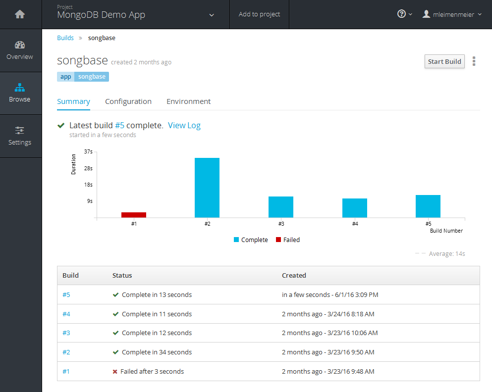
In dieser Übersicht sehen wir, dass Build #1 nach nur 3 Sekunden fehlschlug, was darauf hindeutet, dass wir auf ein privates git Repository mit ssh zugreifen, aber noch keinen ssh key hinterlegt hatten (siehe ssh Schlüssel hinterlegen). An Build #2 und den folgenden erkennen wir ausserdem, dass der erste erfolgreiche Build länger dauerte als die nachfolgenden, da das Caching den Buildprozess ab #3 beschleunigt.
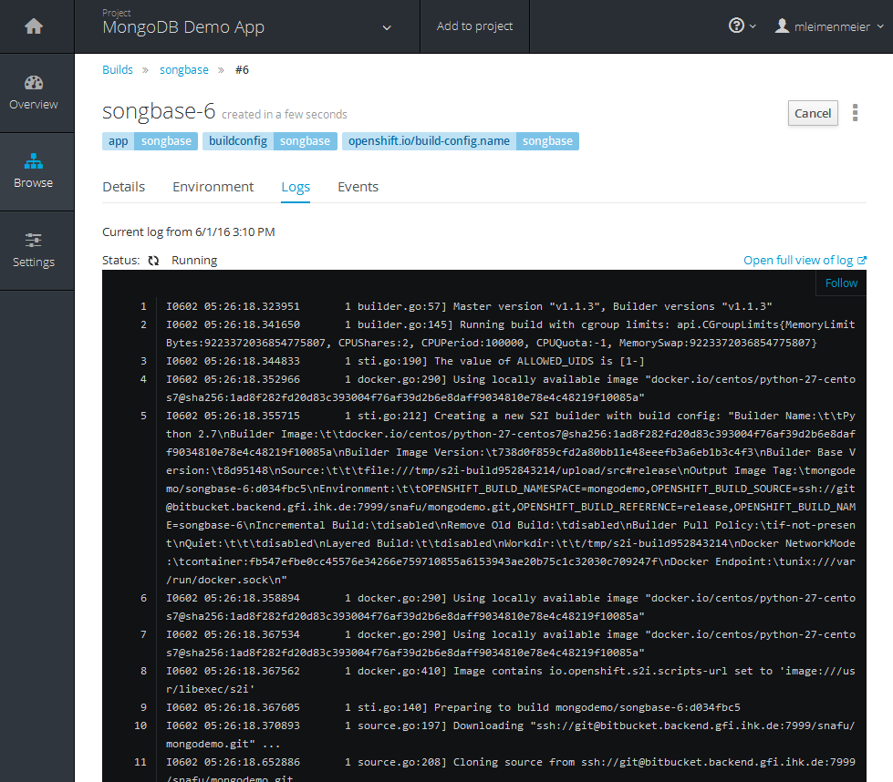
Route erzeugen um die Applikation nach aussen zur Verfügung zu stellen
15:35:21 leimm@189tuxlem001:~> oc expose svc/songbase --hostname=songbase.argo.gfi.ihk.de
route "songbase" exposed
Anzahl der Pods von 1 auf 5 hochskalieren
15:37:10 leimm@189tuxlem001:~> oc scale dc/songbase --replicas=5
deploymentconfig "songbase" scaled
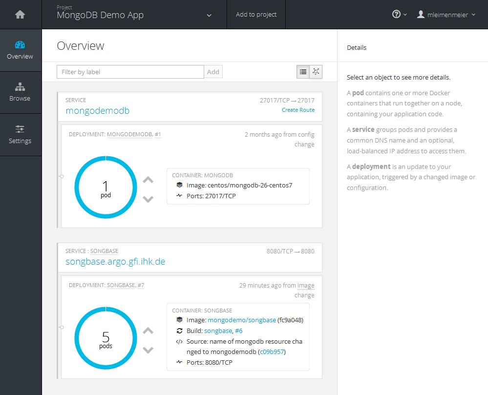
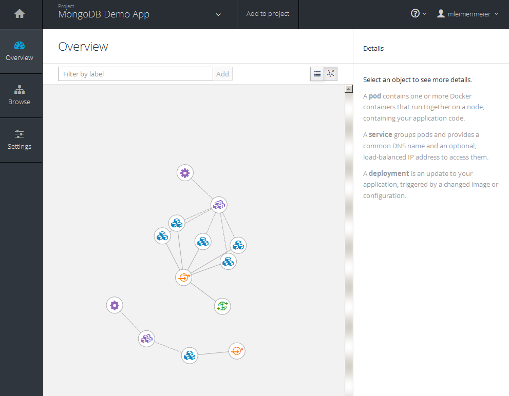
Environment Variablen der MongoDB Instanz auslesen und der Applikation mitteilen
Environment aus der DeploymentConfig der MongoDB auslesen:
15:43:30 leimm@189tuxlem001:~> oc env dc/mongodemodb --list
# deploymentconfigs mongodemodb, container mongodb
MONGODB_USER=user13L
MONGODB_PASSWORD=4odluk5m77SDVSjN
MONGODB_DATABASE=sampledb
MONGODB_ADMIN_PASSWORD=8PIUf7YE8WvQE7Mh
Variablen in die DeploymentConfig der Applikation injezieren:
15:44:49 leimm@189tuxlem001:~> for var in $(oc env dc/mongodemodb --list | grep -v ^#); do oc env dc/songbase $var; done
deploymentconfig "songbase" updated
deploymentconfig "songbase" updated
deploymentconfig "songbase" updated
deploymentconfig "songbase" updated
Und noch einmal kontrollieren:
15:45:54 leimm@189tuxlem001:~> oc env dc/songbase --list
# deploymentconfigs songbase, container songbase
MONGODB_DATABASE=sampledb
MONGODB_PASSWORD=4odluk5m77SDVSjN
MONGODB_USER=user13L
PYTHONUNBUFFERED=0
MONGODB_ADMIN_PASSWORD=8PIUf7YE8WvQE7Mh

Die fertige Applikation
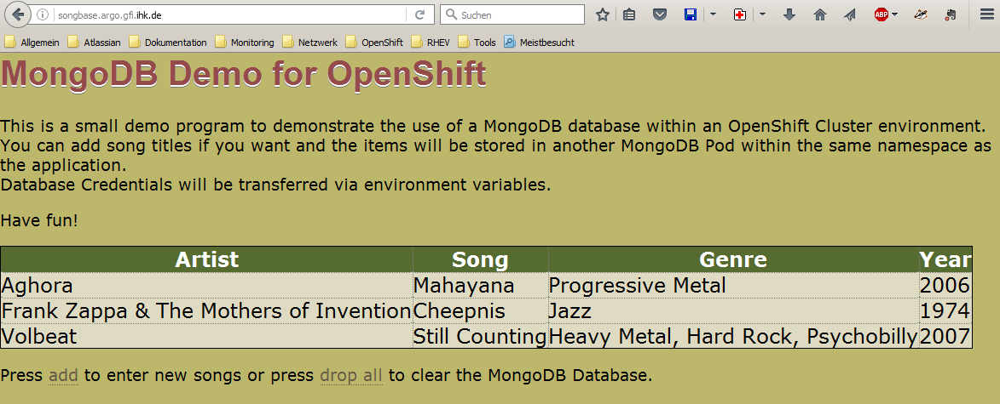
Installation einer Applikation via Docker Build Strategie
Bei dieser Methode legt man seine Quellen zusammen mit einem Dockerfile einfach in ein git Repository ab und erzeugt mit dem oc Kommando eine neue app. Dabei zu beachten ist, dass ein Container in OpenShift immer unter einer zufällig generierten UserID läuft und nicht wie im Docker Standard mit root-Rechten.
Übersicht über das git Repository
08:35:51 leimm@189tuxlem001:podenv> ls -R1
.:
Dockerfile
README.md
src
./src:
gowebenv
./src/gowebenv:
main.go
Der eigentliche Quellcode der Anwendung befindet sich im src/gowebenv Unterverzeichnis. Das für uns wichtige Dockerfile direkt im Hauptstamm.
Das Dockerfile
FROM golang:latest
COPY src/gowebenv/. /go/src/app
WORKDIR /go/src/app
RUN go build -v
RUN go install -v
EXPOSE 8000
CMD ["app"]
Dies ist ein einfaches Beispiel, in dem zuerst der Quellcode kopiert, dann das Arbeitsverzeichnis entsprechend gesetzt und anschliessend die Applikation
kompiliert und installiert wird. Damit ist der Build Anteil des Dockerfiles abgeschlossen; die letzten beiden Zeilen sind fü die Laufzeit bestimmt.
Und zwar teilen wir dem OpenShift mit, dass unsere Applikation auf Port 8000 lauscht und OpenShift einen entsprechenden Service dafür einrichten soll und
zu guter Letzt welches Kommando er in dem Container ausführen soll.
Applikation erstellen
10:34:22 leimm@189tuxlem001:podenv> oc new-app ssh://git@bitbucket.backend.gfi.ihk.de:7999/snafu/podenv.git --strategy=docker
The authenticity of host '[bitbucket.backend.gfi.ihk.de]:7999 ([10.189.91.62]:7999)' can't be established.
RSA key fingerprint is 85:2b:a6:e3:94:2c:c9:79:9b:6f:46:19:6c:89:e0:92.
Are you sure you want to continue connecting (yes/no)? yes
--> Found Docker image a944ae6 (13 days old) from Docker Hub for "golang:latest"
* An image stream will be created as "golang:latest" that will track the source image
* A Docker build using source code from ssh://git@bitbucket.backend.gfi.ihk.de:7999/snafu/podenv.git will be created
* The resulting image will be pushed to image stream "podenv:latest"
* Every time "golang:latest" changes a new build will be triggered
* This image will be deployed in deployment config "podenv"
* Port 8000 will be load balanced by service "podenv"
* Other containers can access this service through the hostname "podenv"
* WARNING: Image "podenv" runs as the 'root' user which may not be permitted by your cluster administrator
--> Creating resources with label app=podenv ...
imagestream "golang" created
imagestream "podenv" created
buildconfig "podenv" created
deploymentconfig "podenv" created
service "podenv" created
--> Success
Build scheduled for "podenv", use 'oc logs' to track its progress.
Run 'oc status' to view your app.
Der --strategy=docker Schalter dient dazu die automatische Erkennung des Quelltexttyps zu unterbinden und in jedem Falle einen Docker-Build durchzuführen,
da sonst der OpenShift ein zum Quellcode passendes S2I Builder Image vorschlägt wenn er z.B. ein Python Skript im repository vorfindet.
Build Vorgang anschauen
10:36:44 leimm@189tuxlem001:podenv> oc logs bc/podenv --follow
podenv-1
I0607 08:39:39.945906 1 builder.go:57] Master version "v1.2.0", Builder version "v1.2.0"
I0607 08:39:39.963958 1 builder.go:145] Running build with cgroup limits: api.CGroupLimits{MemoryLimitBytes:92233720368547, CPUShares:2, CPUPeriod:100000, CPUQuota:-1, MemorySwap:92233720368547}
I0607 08:39:39.964699 1 source.go:197] Downloading "ssh://git@bitbucket.backend.gfi.ihk.de:7999/snafu/podenv.git" ...
I0607 08:39:40.175976 1 source.go:208] Cloning source from ssh://git@bitbucket.backend.gfi.ihk.de:7999/snafu/podenv.git
Step 1 : FROM golang@sha256:a944ae6f2d2259e4b9fcdf6ddcacce91231d7c3f1b950c9a33774a963fdc7eae
Trying to pull repository docker.io/library/golang ... Pulling from library/golang
Pulling fs layer
Pulling fs layer
Pulling fs layer
Pulling fs layer
Pulling fs layer
Pulling fs layer
Pulling fs layer
Pulling fs layer
Pulling fs layer
Pulling fs layer
Downloading [==================================================>] 32 B/32 B
Verifying Checksum
Download complete
Downloading [==================================================>] 32 B/32 B
Verifying Checksum
Download complete
Downloading [==================================================>] 32 B/32 B
Verifying Checksum
Download complete
Downloading [==================================================>] 1.356 kB/1.356 kB
Verifying Checksum
Download complete
Downloading [==================================================>] 123 B/123 B
Downloading [=================================================> ] 56.77 MB/56.9 MB
Downloading [==================================================>] 56.9 MB/56.9 MB
Verifying Checksum
Download complete
Downloading [======================> ] 37.85 MB/84.85 MB
Downloading [======================> ] 38.39 MB/84.85 MB
Downloading [======================> ] 38.93 MB/84.85 MB
Extracting [> ] 557.1 kB/56.9 MB
Downloading [=================================================> ] 84.34 MB/84.85 MB
Downloading [==================================================>] 84.85 MB/84.85 MB
Verifying Checksum
Download complete
Extracting [> ] 557.1 kB/84.85 MB
Extracting [> ] 1.114 MB/84.85 MB
Extracting [> ] 1.671 MB/84.85 MB
Extracting [=> ] 2.228 MB/84.85 MB
Extracting [=> ] 2.785 MB/84.85 MB
Extracting [=> ] 3.342 MB/84.85 MB
Extracting [==> ] 3.899 MB/84.85 MB
Extracting [==> ] 4.456 MB/84.85 MB
Extracting [==> ] 5.014 MB/84.85 MB
Extracting [===> ] 5.571 MB/84.85 MB
Extracting [===> ] 6.128 MB/84.85 MB
Extracting [===> ] 6.685 MB/84.85 MB
Extracting [====> ] 7.242 MB/84.85 MB
Extracting [====> ] 7.799 MB/84.85 MB
Extracting [====> ] 8.356 MB/84.85 MB
Extracting [=================================================> ] 84.12 MB/84.85 MB
Extracting [=================================================> ] 84.67 MB/84.85 MB
Extracting [==================================================>] 84.85 MB/84.85 MB
Extracting [==================================================>] 84.85 MB/84.85 MB
Pull complete
Extracting [==================================================>] 32 B/32 B
Extracting [==================================================>] 32 B/32 B
Extracting [==================================================>] 32 B/32 B
Pull complete
Extracting [==================================================>] 32 B/32 B
Extracting [==================================================>] 32 B/32 B
Extracting [==================================================>] 32 B/32 B
Pull complete
Extracting [==================================================>] 123 B/123 B
Extracting [==================================================>] 123 B/123 B
Extracting [==================================================>] 123 B/123 B
Pull complete
Extracting [==================================================>] 32 B/32 B
Extracting [==================================================>] 32 B/32 B
Extracting [==================================================>] 32 B/32 B
Pull complete
Extracting [==================================================>] 1.356 kB/1.356 kB
Extracting [==================================================>] 1.356 kB/1.356 kB
Extracting [==================================================>] 1.356 kB/1.356 kB
Pull complete
Digest: sha256:a944ae6f2d2259e4b9fcdf6ddcacce91231d7c3f1b950c9a33774a963fdc7eae
Status: Downloaded newer image for docker.io/golang@sha256:a944ae6f2d2259e4b9fcdf6ddcacce91231d7c3f1b950c9a33774a963fdc7eae
---> 024309f28934
Step 2 : COPY src/gowebenv/. /go/src/app
---> e64bd0a8edc5
Removing intermediate container 2ba876057f0e
Step 3 : WORKDIR /go/src/app
---> Running in 9f1992aa8fca
---> f695739fdbc9
Removing intermediate container 9f1992aa8fca
Step 4 : RUN go build -v
---> Running in 893aaa3b7ce4
app
---> 59e43e9e0db8
Removing intermediate container 893aaa3b7ce4
Step 5 : RUN go install -v
---> Running in 8cb2aa6203f5
app
---> a20962c4d4ff
Removing intermediate container 8cb2aa6203f5
Step 6 : EXPOSE 8000
---> Running in 7b600eed1981
---> 7b38469d7d25
Removing intermediate container 7b600eed1981
Step 7 : CMD app
---> Running in 93f2ab68a2af
---> 465fefc08cbb
Removing intermediate container 93f2ab68a2af
Step 8 : ENV "OPENSHIFT_BUILD_NAME" "podenv-1" "OPENSHIFT_BUILD_NAMESPACE" "podenv" "OPENSHIFT_BUILD_SOURCE" "ssh://git@bitbucket.backend.gfi.ihk.de:7999/snafu/podenv.git" "OPENSHIFT_BUILD_COMMIT" "a093f7041ed99d9b3871fdfc47dc81f4c57faa12"
---> Running in e9ef11386aeb
---> ca431a0b2e74
Removing intermediate container e9ef11386aeb
Step 9 : LABEL "io.openshift.build.commit.author" "Michael Leimenmeier \u003cmichael.leimenmeier@gfi.ihk.de\u003e" "io.openshift.build.commit.date" "Thu Feb 25 11:15:47 2016 +0100" "io.openshift.build.commit.id" "a093f7041ed99d9b3871fdfc47dc81f4c57faa12" "io.openshift.build.commit.ref" "master" "io.openshift.build.commit.message" "testbug included" "io.openshift.build.source-location" "ssh://git@bitbucket.backend.gfi.ihk.de:7999/snafu/podenv.git"
---> Running in 33c60d1ac517
---> c7bc4ea9674e
Removing intermediate container 33c60d1ac517
Successfully built c7bc4ea9674e
I0607 08:40:44.352348 1 docker.go:118] Pushing image 172.30.25.80:5000/podenv/podenv:latest ...
I0607 08:42:13.628008 1 docker.go:122] Push successful
Die Zeilen in denen der Docker Daemon das image herunterlädt und extrahiert sind gekürzt um die Lesbarkeit zu erhöhen.
Route erzeugen um die Applikation nach aussen zur Verfügung zu stellen
15:35:21 leimm@189tuxlem001:~> oc expose svc/podenv --hostname=podenv.argo.gfi.ihk.de
route "podenv" exposed
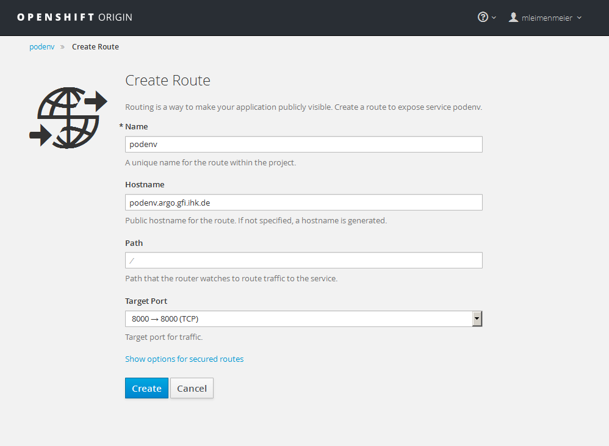
Unter dem Punkt "Show options for secured routes" können bei Bedarf noch SSL/TLS-Zertifikate hinterlegt und eine Terminierung der Verbindung festgelegt werden.
Projektübersicht
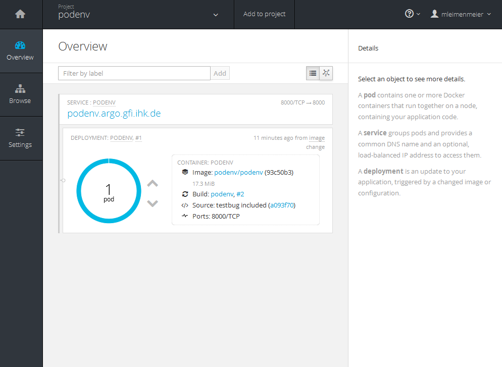
Hier sehen wir das Projekt mit der podenv app und können anhand des blauen Kreises den Status (falls Probleme auftreten wird dieser gelb) und die Anzahl der aktuell laufenden Pods ermitteln (und mit Hilfe der Pfeiltasten auch bequem hoch und runter skalieren). Ausserdem sehen wir die definierte Route, unter der unser Webservice nun von ausserhalb zu erreichen ist: podenv.gfi.ihk.de.
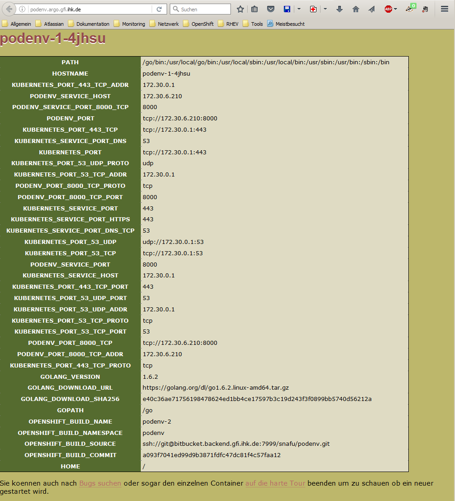
ssh Schlüssel hinterlegen
Ist das Repository aus dem man seine Applikation bezieht nicht öffentlich empfiehlt es sich einen ssh Schlüssel zu erzeugen und diesen dann sowohl in den Benutzereinstellungen in der Repository-Verwaltung (bitbucket, github, gitlab, o.ä.) einzufügen als auch in der BuildConfig des OpenShift Projektes zu hinterlegen, da es dem Build Prozess auf dem OpenShift Cluster sonst nicht möglich ist sich gegen das Repository zu authentifizieren.
- Zu Beginn erzeugen wir einen ssh Schlüssel, der nicht durch eine Passphrase abgesichert sein darf, da ein automatisierter Build sonst statt des Repository Kennwortes nun die Eingabe der Passphrase erfordern würde und wir nichts gewonnen hätten.
- Den erzeugten Public Key hinterlegen wir nun im Benutzerprofil des Bitbucket.
- Aus dem Private Key erzeugen wir nun im OpenShift ein Objekt des Typs secret
- und erlauben dem für den Build zuständigen OpenShift Systemaccount den Zugriff auf selbiges.
- Zu guter Letzt muss das secret noch in der BuildConfig der jeweiligen Applikation hinterlegt werden, in dem wir der BuildConfig zwei Zeilen hinzufügen.
SSH Schlüssel generieren
10:46:54 mleimenmeier@h2366850:sshkey> ssh-keygen -f git
Generating public/private rsa key pair.
Enter passphrase (empty for no passphrase):
Enter same passphrase again:
Your identification has been saved in git.
Your public key has been saved in git.pub.
The key fingerprint is:
bb:1d:f8:51:02:03:92:28:8b:f3:59:7d:15:f4:cc:bf mleimenmeier@h2366850.snafuprinzip.de
The key's randomart image is:
+--[ RSA 2048]----+
| .... .o. |
|. . .. . .+ |
|.o . o. + |
|+ . . .o . |
| o o .S . . . |
| o o o . |
| o o E |
| + o |
| . o |
+-----------------+
10:47:18 mleimenmeier@h2366850:sshkey> ls -l
total 8
-rw-------. 1 mleimenmeier mleimenmeier 1679 Jun 1 10:47 git
-rw-r--r--. 1 mleimenmeier mleimenmeier 420 Jun 1 10:47 git.pub
10:47:30 mleimenmeier@h2366850:sshkey> file *
git: PEM RSA private key
git.pub: OpenSSH RSA public key
10:47:49 mleimenmeier@h2366850:sshkey> cat git.pub
ssh-rsa AAAAB3NzaC1yc2EAAAADAQABAAABAQDJcTtfw6e+6LzXGqwtQ71xJoOHuHpAh3IIoiwNxbsCPaDf26LtT9l3j16Iu+8ItiiF2E6jXNQqiiVONnV44v/OhydqNCXOsXY9IbLVB+A3bsoZp6rvphIIDiFQif6tGA/xaEeDmN9HyAZnCX4OEDnMz0MQxukwNEgJy4+IM1nkSEKKD1fB6+/5HiauiXLjS513MMS3PYLKkeEP7MtzM5YAB0xvPA/E/FbG/A8KYTOeLA/fRAitipAHeKzir11xA5iquRbTNdV+USsBp5hqWP4HyerHPMjamtEjIdfI36c4rmNzy7zdSaYJx5U744xjev8mB9QTUxnJNBThfjJWl22n mleimenmeier@h2366850.snafuprinzip.de
SSH Schlüssel im Benutzerprofile des Bitbucket hinterlegen
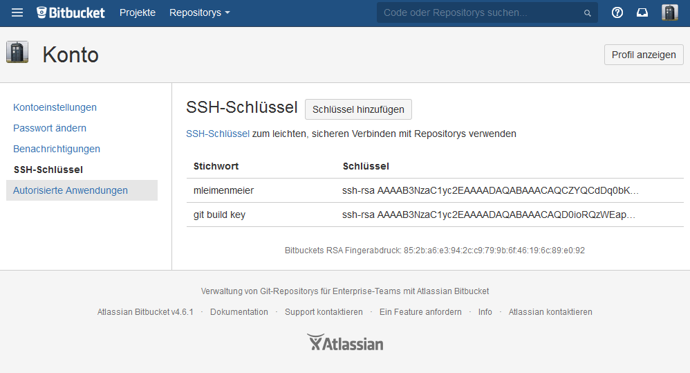
OpenShift secret aus dem private key erstellen
10:55:19 mleimenmeier@h2366850:sshkey> oc secrets new-sshauth sshsecret --ssh-privatekey=git
secret/sshsecret
Dem Builder Systemaccount Zugriff auf das secret gewähren
10:55:21 mleimenmeier@h2366850:sshkey> oc secrets add serviceaccount/builder secrets/sshsecret
Das secret in der BuildConfig hinterlegen (die beiden grün markierten Zeilen einfügen)
10:55:44 mleimenmeier@h2366850:sshkey> oc edit bc/songbase
--- snip ---
# Please edit the object below. Lines beginning with a '#' will be ignored,
# and an empty file will abort the edit. If an error occurs while saving this file will be
# reopened with the relevant failures.
#
apiVersion: v1
kind: BuildConfig
metadata:
annotations:
openshift.io/generated-by: OpenShiftNewApp
creationTimestamp: 2016-03-23T08:48:05Z
labels:
app: songbase
name: songbase
namespace: mongodemo
resourceVersion: "1679520"
selfLink: /oapi/v1/namespaces/mongodemo/buildconfigs/songbase
uid: f5be821e-f0d3-11e5-ab83-001a4a683439
spec:
output:
to:
kind: ImageStreamTag
name: songbase:latest
postCommit: {}
resources: {}
source:
git:
ref: release
uri: ssh://git@bitbucket.backend.gfi.ihk.de:7999/snafu/mongodemo.git
secrets: []
sourceSecret:
name: sshsecret
type: Git
strategy:
sourceStrategy:
from:
kind: ImageStreamTag
name: python:2.7
namespace: openshift
type: Source
triggers:
- github:
secret: IReaRK75rWbI6oWtED5u
type: GitHub
- generic:
secret: xiOpJzUf8oLK5QzgUOMO
type: Generic
- type: ConfigChange
- imageChange:
lastTriggeredImageID: docker.io/centos/python-27-centos7@sha256:1ad8f282fd20d83c393004f76af39d2b6e8daff9034810e78e4c48219f10085a
type: ImageChange
status:
lastVersion: 4
--- snap ---